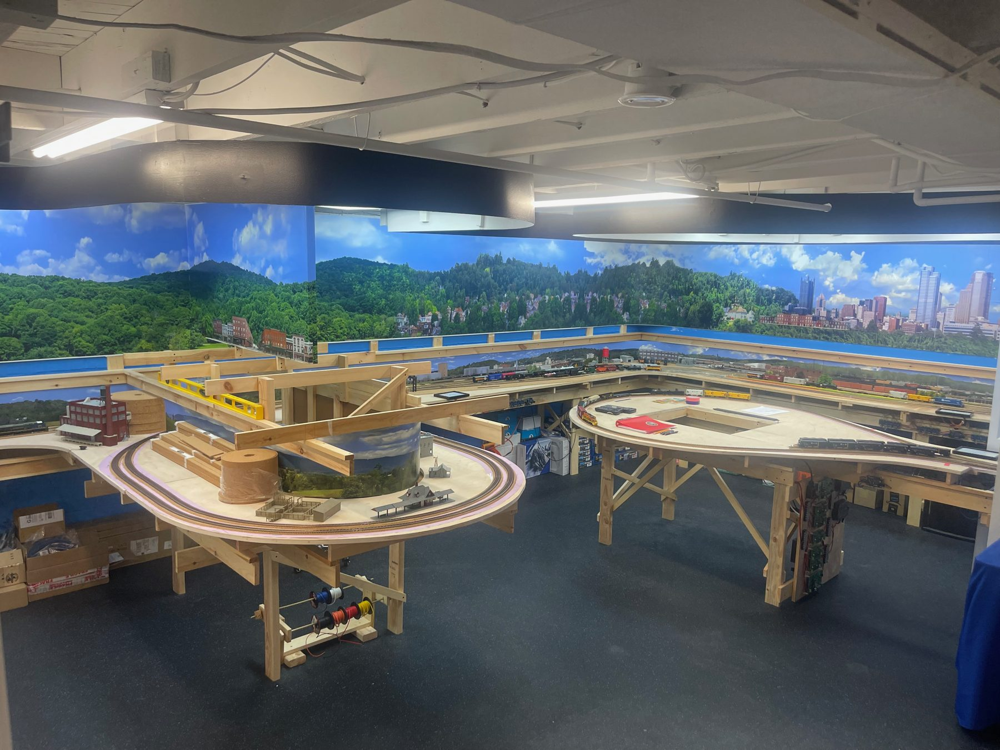

The Build

HART fills one room. The track plan settled in July 2025: the benchwork footprint, old maps of the island laid over it to place the yards and plants, then the main line, the yard on the peninsula and the helix down to staging. Crews already run sessions on the railroad while construction goes on around them.
Plans by level
Staging is the lower level, at the bottom of the helix. It is finished, and trains already run on it.
A helix is a spiral of track that lets trains change levels in a small space. HART's carries two tracks down to staging in about three and a half turns, with four inches between loops. The roadbed is cut from plywood and joined with half-laps, using router templates made on a 3D printer.
The main level sits 15 inches above staging, at the top of the helix. Its 1x2 joists run from the L-girder already on the back wall, on mitered 1x3 blocks, to a new front girder (a 1x2 web on the face over a flat 1x3 flange): one piece wall to wall on the north side, tied into the peninsula on the west, with two rods per run down to the staging legs. Keeping the framing shallow leaves over 11 inches to reach the staging tracks underneath. The deck at 0 is 3/4 in plywood; the ledges and helix top at +4-1/4 are 1/2 in. Work on the main level resumes after Thanksgiving.
PDF, 7 pp
Framing drawings
A framing plan of the whole level, a section through the shelf, the front girder, junction and riser block details, a typical bay, and the assembly steps with a lumber list.
Cut plan, 4 + 5 sheets
Plywood cut sheets
Every main-level piece laid out on 4 x 8 sheets: four of 3/4 in for the deck at 0, five of 1/2 in for the +4-1/4 ledges and helix top, with trammel radii and edge offsets.
PDF, 11 pp
Marking sheets
For each cut sheet, every point to mark measured from the left and top factory edges: corners, trammel centres and radii for the arcs, and batten points every 3 in along the free curves.
Cut list, 1x2 + 1x3
Lumber cut list
Every joist, girder piece, closet part and riser block assigned to a stick: the closet boxes from the 1x3 on hand first, then the 16 ft sticks, with the lengths to measure in the room before cutting.
The layout through the build
A look back at the layout before HART, then the room month by month, from bare walls in February 2025 to the helix going up in October 2026. Tap a photo to see it larger. More of the build, the finished room and the panels are on the Photos page.
Loading…